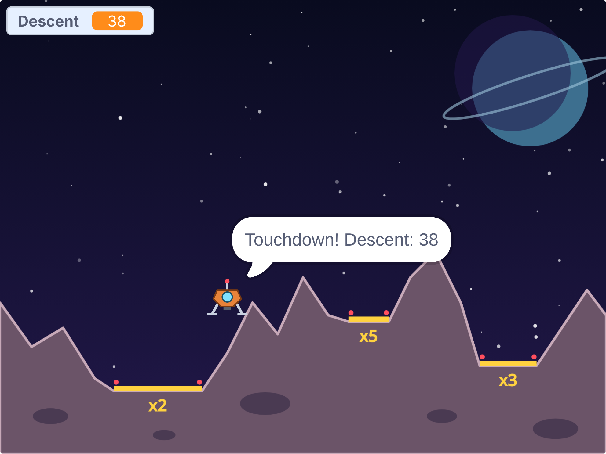
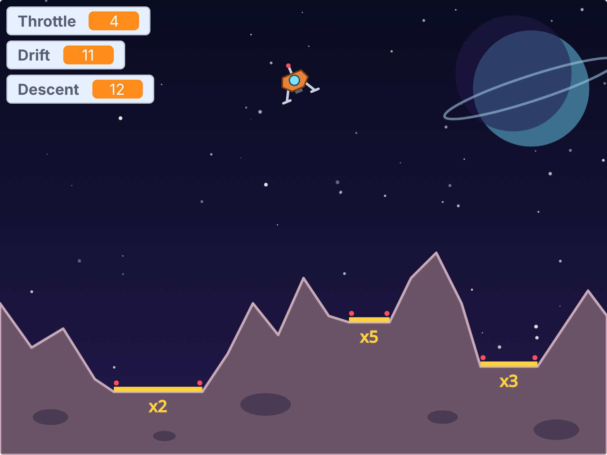
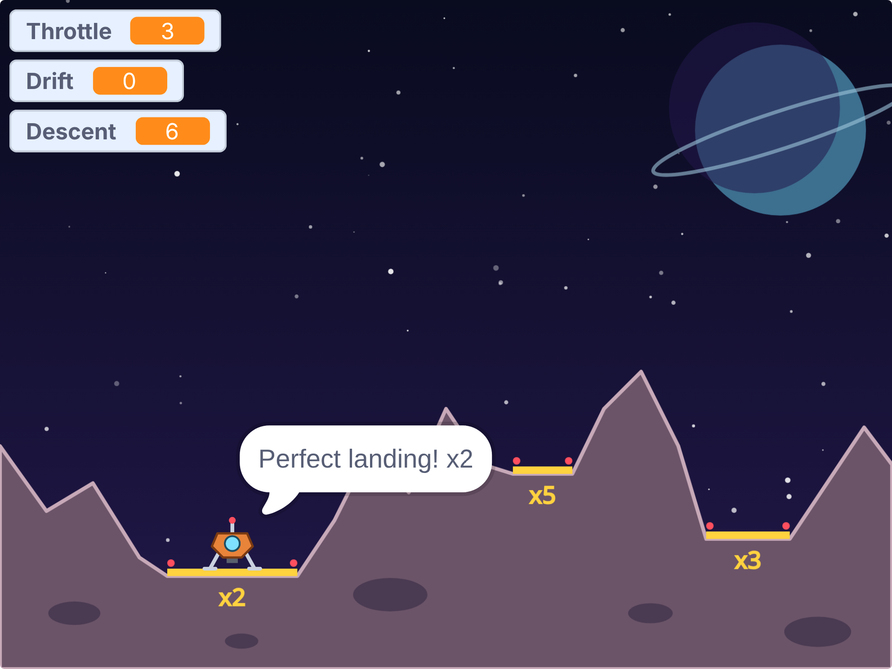
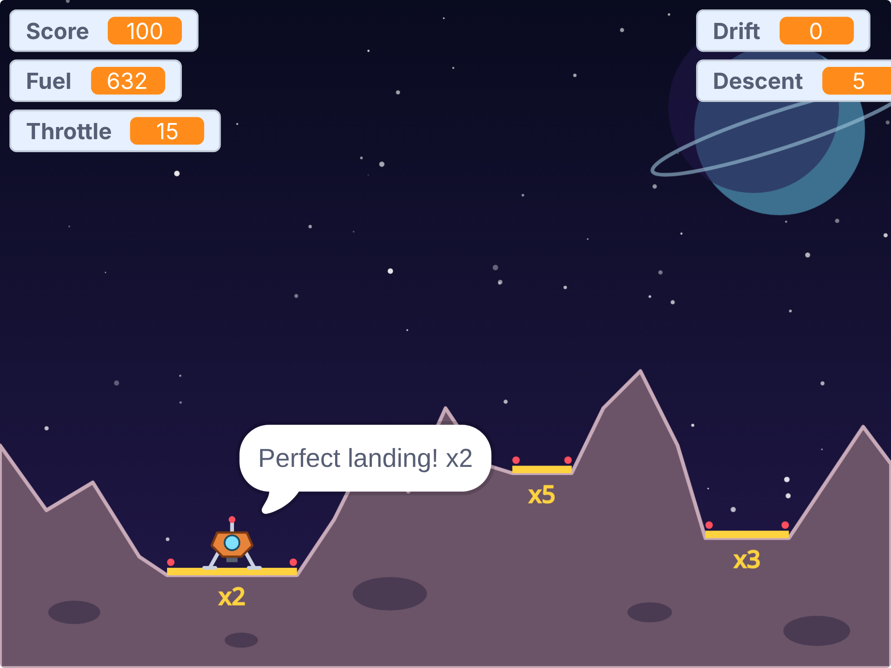

<title>Dust Hopper Tutorial</title>
<meta name="claude:viewport-fit-sides" content="cover">
<link rel="preconnect" href="https://fonts.googleapis.com">
<link rel="stylesheet" href="https://fonts.googleapis.com/css2?family=Fredoka:wght@500;600&family=Atkinson+Hyperlegible:ital,wght@0,400;0,700;1,400&family=JetBrains+Mono:wght@400&display=swap">
<style>
/* Layout: one reading column; each step is a numbered section with blocks, a result screenshot and a checkpoint file. */
:root {
  --bg: #f4f3fa; --surface: #ffffff; --fg: #1f1d33; --muted: #5c5a74; --line: #dddbea;
  --accent: #4b3fb5; --accent-soft: #e7e4fb; --drone: #c9621f; --code-bg: #f8f7fd;
  --display: "Fredoka", "Trebuchet MS", system-ui, sans-serif;
  --body: "Atkinson Hyperlegible", "Segoe UI", system-ui, sans-serif;
  --mono: "JetBrains Mono", ui-monospace, Consolas, monospace;
}
@media (prefers-color-scheme: dark) { :root:not([data-theme="light"]) {
  --bg: #13121f; --surface: #1c1a2c; --fg: #ebe9f7; --muted: #a6a3bf; --line: #312e47;
  --accent: #a99cff; --accent-soft: #2a2550; --drone: #f2a065; --code-bg: #232036; color-scheme: dark; } }
:root[data-theme="dark"] {
  --bg: #13121f; --surface: #1c1a2c; --fg: #ebe9f7; --muted: #a6a3bf; --line: #312e47;
  --accent: #a99cff; --accent-soft: #2a2550; --drone: #f2a065; --code-bg: #232036; color-scheme: dark; }

body { background: var(--bg); color: var(--fg); font: 17px/1.6 var(--body);
  padding-left: max(16px, env(safe-area-inset-left, 0px)); padding-right: max(16px, env(safe-area-inset-right, 0px)); padding-block: 40px 72px; }
main { max-width: 760px; margin: 0 auto; display: grid; gap: 48px; }
h1, h2, h3 { font-family: var(--display); font-weight: 600; text-wrap: balance; margin: 0; line-height: 1.15; }
h1 { font-size: clamp(2rem, 6vw, 2.9rem); }
h2 { font-size: 1.7rem; }
h3 { font-size: 1.15rem; font-weight: 500; }
p { margin: 0; max-width: 66ch; }
a { color: var(--accent); }
code { font: 0.88em var(--mono); background: var(--code-bg); padding: 1px 5px; border-radius: 4px; overflow-wrap: anywhere; }
.eyebrow { font: 600 0.78rem var(--body); letter-spacing: 0.08em; text-transform: uppercase; color: var(--drone); }
.stack { display: grid; gap: 16px; min-width: 0; }
.intro { display: grid; gap: 14px; }
.intro p { color: var(--muted); font-size: 1.08rem; }

.plan { list-style: none; margin: 0; padding: 0; display: grid; gap: 6px; counter-reset: plan; }
.plan li { display: flex; flex-wrap: wrap; align-items: baseline; gap: 4px 12px; padding: 8px 12px; border-radius: 6px; counter-increment: plan; }
.plan li::before { content: counter(plan); font: 600 0.95rem var(--display); color: var(--muted); width: 1.4em; }
.plan .name { font-weight: 700; }
.plan a { text-decoration: none; }
.plan a:hover .name, .plan a:focus-visible .name { text-decoration: underline; }
.plan .what { color: var(--muted); flex: 1 1 220px; }

.step { display: grid; gap: 20px; border-top: 2px solid var(--line); padding-top: 32px; }
.step-head { display: flex; align-items: center; gap: 14px; }
.num { flex: none; width: 44px; height: 44px; border-radius: 50%; display: grid; place-items: center;
  background: var(--accent); color: var(--surface); font: 600 1.3rem var(--display); }
ol.do { margin: 0; padding-left: 1.3em; display: grid; gap: 8px; max-width: 66ch; }

.blocks-panel { background: var(--surface); border: 1px solid var(--line); border-radius: 8px; padding: 16px; overflow-x: auto; }
.blocks-panel .label { font: 700 0.78rem var(--body); letter-spacing: 0.06em; text-transform: uppercase; color: var(--muted); margin-bottom: 8px; }
pre.blocks { margin: 0; font: 13px var(--mono); white-space: pre; }

.note { border-left: 3px solid var(--drone); padding: 2px 0 2px 14px; color: var(--fg); }
.note b { color: var(--drone); }
figure { margin: 0; display: grid; gap: 8px; }
figure img { width: 100%; border-radius: 8px; border: 1px solid var(--line); display: block; }
figcaption { font-size: 0.9rem; color: var(--muted); }

.table-wrap { overflow-x: auto; }
table { border-collapse: collapse; font-variant-numeric: tabular-nums; min-width: 420px; }
th, td { text-align: right; padding: 6px 14px; border-bottom: 1px solid var(--line); }
th:first-child, td:first-child { text-align: left; }
th { font-size: 0.82rem; color: var(--muted); font-weight: 700; }

.checkpoint { display: flex; flex-wrap: wrap; align-items: center; gap: 10px 16px; background: var(--surface);
  border: 1px solid var(--line); border-radius: 8px; padding: 12px 16px; }
.checkpoint p { flex: 1 1 260px; color: var(--muted); font-size: 0.95rem; }
.btn { display: inline-block; font-weight: 700; text-decoration: none; color: var(--surface); background: var(--accent);
  padding: 8px 16px; border-radius: 6px; white-space: nowrap; }
.btn:hover, .btn:focus-visible { outline: 3px solid var(--accent-soft); outline-offset: 1px; }
.try { margin: 0; padding-left: 1.3em; display: grid; gap: 6px; }
svg.coords text { font: 11px var(--body); fill: var(--muted); }
.scripts { display: flex; flex-wrap: wrap; gap: 12px; align-items: flex-start; }
.scripts .blocks-panel { flex: 0 1 auto; max-width: 100%; min-width: 0; }
.tag { font-size: 0.7rem; font-weight: 700; letter-spacing: 0.04em; padding: 1px 7px; border-radius: 999px; margin-left: 6px; }
.tag.new { background: var(--accent); color: var(--surface); }
.tag.changed { border: 1px solid var(--drone); color: var(--drone); }
.flow { list-style: none; margin: 0; padding: 0; display: flex; flex-wrap: wrap; gap: 8px; counter-reset: none; }
.flow li { display: grid; gap: 2px; padding: 10px 14px; border-radius: 8px; background: var(--surface); border: 1px solid var(--line);
  flex: 1 1 130px; min-width: 0; position: relative; }
.flow li b { font: 600 1.05rem var(--display); color: var(--accent); }
.flow li span { font-size: 0.85rem; color: var(--muted); }
footer { color: var(--muted); font-size: 0.92rem; border-top: 2px solid var(--line); padding-top: 24px; }
</style>

<main>
  <header class="intro">
    <span class="eyebrow">Scratch tutorial · 8 steps · about 3–4 hours</span>
    <h1>Build Dust Hopper</h1>
    <p>Dust Hopper is a landing game. You fly a small survey drone over an asteroid and set it down gently on a landing pad. Along the way you will learn how real game physics work, with speed, gravity, thrust and angles, and how to organise a game into small, named pieces.</p>
    <p>You need the free Scratch editor at <a href="https://scratch.mit.edu/projects/editor/">scratch.mit.edu/projects/editor</a>. Each step ends with a checkpoint file, so you can compare your project or catch up.</p>
  </header>

  <section class="stack" aria-label="Steps">
    <h3>The plan</h3>
    <ol class="plan">
      <li><a href="#step-1"><span class="name">Set the scene</span></a><span class="what">Artwork in place, and a setup phase that prepares every sprite</span></li>
      <li><a href="#step-2"><span class="name">Gravity and the tick</span></a><span class="what">A clock that ticks every frame; the drone falls faster and faster</span></li>
      <li><a href="#step-3"><span class="name">Engine</span></a><span class="what">Throttle with Up and Down, thrust against gravity</span></li>
      <li><a href="#step-4"><span class="name">Tilting</span></a><span class="what">Rotate, and split thrust into sideways and upward parts</span></li>
      <li><a href="#step-5"><span class="name">Screen edges</span></a><span class="what">Fly off one side and come back on the other</span></li>
      <li><a href="#step-6"><span class="name">Landing</span></a><span class="what">Perfect landing, hard landing or crash</span></li>
      <li><a href="#step-7"><span class="name">Fuel and score</span></a><span class="what">Burn fuel, earn points, game over</span></li>
      <li><a href="#step-8"><span class="name">Polish</span></a><span class="what">Engine flame, boost key and instructions</span></li>
    </ol>
  </section>

  <section class="stack" id="organised">
    <h2>How the game is organised</h2>
    <p>Many Scratch games put everything in one big <b>forever</b> loop. Dust Hopper doesn’t. Instead it uses two tools that keep every script short:</p>
    <ul class="do">
      <li><b>Messages for phases.</b> The game moves through named phases. Each phase is a message (a broadcast), and any sprite can react to it with <b>when I receive</b>.</li>
      <li><b>My Blocks for jobs.</b> The work the drone does in every frame is split into custom blocks with names like <b>move</b> and <b>check touchdown</b>. Each one does one job.</li>
    </ul>
    <ol class="flow" aria-label="Game phases in order">
      <li><b>setup</b><span>once, when the green flag is clicked</span></li>
      <li><b>new round</b><span>the drone gets ready at the top</span></li>
      <li><b>tick</b><span>every frame, about 30 times a second</span></li>
      <li><b>round over</b><span>landed or crashed: show the result</span></li>
      <li><b>game over</b><span>when the fuel is gone</span></li>
    </ol>
    <p>After <b>round over</b> the game goes back to <b>new round</b> until the fuel runs out. The only loop in the whole game is on the Stage: it sends <b>tick</b> again and again.</p>
    <p class="note"><b>One thing at a time.</b> Scratch never really runs two scripts at once. In each frame it gives every running script a turn, one after another. You can’t rely on which script goes first, so work that must happen in a fixed order goes into one script, as a list of My Blocks.</p>
  </section>

  <!-- ============================================================ STEP 1 -->
  <section class="step" id="step-1">
    <div class="step-head"><span class="num">1</span><h2>Set the scene</h2></div>
    <p>A game needs a world before it needs rules. In this step you load the artwork and add the <b>setup</b> phase, which puts every sprite in its starting place.</p>

    <h3>Get the artwork</h3>
    <ol class="do">
      <li>Download the starter project. It has the artwork but no code.</li>
      <li>In the Scratch editor, choose <b>File › Load from your computer</b> and pick <code>starter.sb3</code>.</li>
      <li>Look around. There is a backdrop called <code>space</code> and three sprites:
        <b>Ground</b> (the rocks), <b>Pads</b> (the yellow landing pads) and <b>Drone</b>, which has four costumes: <code>drone</code>, <code>drone-flame</code>, <code>drone-boost</code> and <code>boom</code>.</li>
    </ol>
    <div class="checkpoint">
      <p>Starter project: artwork only, no code.</p>
      <a class="btn" href="https://github.com/AJosephsen/MyTemporaryJunk/raw/main/scratch/tutorials/dust-hopper/starter.sb3">Download starter.sb3</a>
    </div>
    <p class="note"><b>Drawing your own?</b> Keep the ground and the pads as two separate sprites, each as big as the whole Stage. Later the drone asks “am I touching the Pads?” and “am I touching the Ground?”, and those two questions need two sprites. Draw the drone about 40 pixels wide, with its feet at the bottom.</p>

    <h3>Where things are on the Stage</h3>
    <p>The Stage is 480 pixels wide and 360 tall. The centre is <code>x: 0, y: 0</code>. x grows to the right, up to 240. y grows upwards, up to 180. The drone starts at <code>x: -60, y: 150</code>: a little left of centre, near the top.</p>
    <svg class="coords" viewBox="0 0 520 300" width="100%" style="max-width:520px" role="img" aria-label="Stage coordinates: x from -240 to 240, y from -180 to 180, drone start at x -60, y 150">
      <rect x="20" y="20" width="480" height="260" rx="6" fill="var(--surface)" stroke="var(--line)" stroke-width="2"/>
      <line x1="20" y1="150" x2="500" y2="150" stroke="var(--line)" stroke-width="1.5"/>
      <line x1="260" y1="20" x2="260" y2="280" stroke="var(--line)" stroke-width="1.5"/>
      <text x="26" y="145">x: -240</text><text x="494" y="145" text-anchor="end">x: 240</text>
      <text x="266" y="36">y: 180</text><text x="266" y="274">y: -180</text>
      <text x="266" y="166">0, 0</text>
      <circle cx="260" cy="150" r="3" fill="var(--muted)"/>
      <circle cx="216.7" cy="41.7" r="6" fill="var(--drone)"/>
      <text x="228" y="46" style="fill:var(--drone)">drone start (-60, 150)</text>
    </svg>

    <h3>Make the setup message</h3>
    <ol class="do">
      <li>Click the <b>Stage</b> (bottom right). From Events, drag in <b>when flag clicked</b> and <b>broadcast and wait</b>.</li>
      <li>Open the menu on <b>broadcast and wait</b>, choose <b>New message</b>, and call it <code>setup</code>.</li>
      <li>Give each sprite a <b>when I receive setup</b> script, as shown below.</li>
    </ol>
    <div class="scripts">
<div class="blocks-panel"><div class="label">Stage <span class="tag new">new</span></div>
<pre class="blocks">when flag clicked
broadcast (setup v) and wait</pre></div>
<div class="blocks-panel"><div class="label">Ground <span class="tag new">new</span></div>
<pre class="blocks">when I receive [setup v]
go to x: (0) y: (0)</pre></div>
<div class="blocks-panel"><div class="label">Pads <span class="tag new">new</span></div>
<pre class="blocks">when I receive [setup v]
go to x: (0) y: (0)</pre></div>
<div class="blocks-panel"><div class="label">Drone <span class="tag new">new</span></div>
<pre class="blocks">when I receive [setup v]
go to x: (-60) y: (150)
point in direction (90)</pre></div>
</div>

    <h3>How it works</h3>
    <ul class="do">
      <li><b>The Stage is in charge.</b> Only the Stage reacts to the green flag. It sends <b>setup</b> to everyone.</li>
      <li><b>broadcast and wait</b> waits until every <b>when I receive setup</b> script has finished. So when the next block runs (in step 2), every sprite is guaranteed to be ready.</li>
      <li><b>point in direction 90</b> means “stand up straight”: in Scratch, direction 90 shows a costume exactly as it was drawn.</li>
    </ul>

    <h3>Check it</h3>
    <p>Click the green flag. The drone should hang in the sky above the rocks. Nothing moves yet.</p>
    <figure>
      
      <figcaption>End of step 1. Everything is in its starting place.</figcaption>
    </figure>
    <div class="checkpoint">
      <p>Checkpoint: the project at the end of step 1.</p>
      <a class="btn" href="https://github.com/AJosephsen/MyTemporaryJunk/raw/main/scratch/tutorials/dust-hopper/step1.sb3">Download step1.sb3</a>
    </div>
  </section>

  <!-- ============================================================ STEP 2 -->
  <section class="step" id="step-2">
    <div class="step-head"><span class="num">2</span><h2>Gravity and the tick</h2></div>
    <p>Things do not fall at a steady speed. They start slowly and get faster. Games copy this with two simple rules, repeated in every frame:</p>
    <ol class="do">
      <li><b>Gravity changes the speed:</b> the falling speed grows a little.</li>
      <li><b>Speed changes the position:</b> the drone moves by its current speed.</li>
    </ol>
    <p>Because the speed keeps growing, each move is a bit bigger than the last:</p>
    <div class="table-wrap">
      <table>
        <thead><tr><th>Frame</th><th>Time</th><th>Speed <code>vy</code></th><th>Height <code>posY</code></th><th>Descent display</th></tr></thead>
        <tbody>
          <tr><td>start</td><td>0 s</td><td>0</td><td>150</td><td>0</td></tr>
          <tr><td>1</td><td></td><td>-0.035</td><td>149.965</td><td>0</td></tr>
          <tr><td>2</td><td></td><td>-0.07</td><td>149.895</td><td>1</td></tr>
          <tr><td>3</td><td></td><td>-0.105</td><td>149.79</td><td>1</td></tr>
          <tr><td>30</td><td>1 s</td><td>-1.05</td><td>133.7</td><td>11</td></tr>
          <tr><td>60</td><td>2 s</td><td>-2.1</td><td>86.0</td><td>21</td></tr>
          <tr><td>90</td><td>3 s</td><td>-3.15</td><td>6.7</td><td>32</td></tr>
        </tbody>
      </table>
    </div>
    <p>In the first second the drone drops about 16 pixels. In the third second it drops almost 80. That is gravity.</p>

    <h3>The tick</h3>
    <p>“In every frame” needs a clock. The Stage gets a <b>forever</b> loop that sends a <b>tick</b> message, once per frame. Anything that should happen every frame goes in a <b>when I receive tick</b> script.</p>
    <p class="note"><b>The tick rule:</b> a tick script must finish straight away. No <b>wait</b>, no <b>say … for … seconds</b>, no <b>glide</b>. If a tick script is still busy when the next tick arrives, Scratch starts it again from the top. Notice the plain <b>broadcast tick</b>, not <b>broadcast and wait</b>: waiting would cost an extra frame every time and make the game run at half speed.</p>

    <h3>Make the pieces</h3>
    <ol class="do">
      <li><b>Messages:</b> <code>new round</code> and <code>tick</code>.</li>
      <li><b>Variables</b> (For all sprites): <code>gravity</code>, <code>posX</code>, <code>posY</code>, <code>vy</code>, <code>state</code> and <code>Descent</code>. Untick all of them except <code>Descent</code>, so only Descent shows on the Stage.</li>
      <li><b>My Blocks:</b> on the Drone, click <b>Make a Block</b> four times and name the blocks <code>move</code>, <code>place on screen</code>, <code>update displays</code> and <code>check touchdown</code>. Each one gives you a pink <b>define</b> hat to build under, and a block you can use in other scripts.</li>
    </ol>
    <div class="scripts">
<div class="blocks-panel"><div class="label">Stage <span class="tag changed">changed</span></div>
<pre class="blocks">when flag clicked
broadcast (setup v) and wait
broadcast (new round v)
forever
  broadcast (tick v)
end</pre></div>
<div class="blocks-panel"><div class="label">Stage <span class="tag new">new</span></div>
<pre class="blocks">when I receive [setup v]
set [gravity v] to (0.035)
set [state v] to [waiting]</pre></div>
<div class="blocks-panel"><div class="label">Drone <span class="tag new">new</span></div>
<pre class="blocks">when I receive [new round v]
set [posX v] to (-60)
set [posY v] to (150)
set [vy v] to (0)
point in direction (90)
go to x: (posX) y: (posY)
set [state v] to [flying]</pre></div>
<div class="blocks-panel"><div class="label">Drone <span class="tag new">new</span></div>
<pre class="blocks">when I receive [tick v]
if &lt;(state) = [flying]&gt; then
  move :: custom
  place on screen :: custom
  update displays :: custom
  check touchdown :: custom
end</pre></div>
<div class="blocks-panel"><div class="label">Drone <span class="tag new">new</span></div>
<pre class="blocks">define move
change [vy v] by ((0) - (gravity))
change [posY v] by (vy)</pre></div>
<div class="blocks-panel"><div class="label">Drone <span class="tag new">new</span></div>
<pre class="blocks">define place on screen
go to x: (posX) y: (posY)</pre></div>
<div class="blocks-panel"><div class="label">Drone <span class="tag new">new</span></div>
<pre class="blocks">define update displays
set [Descent v] to (round ((vy) * (-10)))</pre></div>
<div class="blocks-panel"><div class="label">Drone <span class="tag new">new</span></div>
<pre class="blocks">define check touchdown
if &lt;&lt;touching (Ground v)?&gt; or &lt;touching (Pads v)?&gt;&gt; then
  set [state v] to [landed]
  say (join [Touchdown! Descent: ] (Descent))
end</pre></div>
</div>

    <h3>How it works</h3>
    <ul class="do">
      <li><b>The Stage’s flag script</b> now runs the phases in order: <b>setup</b> (and wait), then <b>new round</b>, then the tick forever.</li>
      <li><b>state</b> says what the drone is doing. Setup makes it <code>waiting</code>; <b>new round</b> makes it <code>flying</code> as its very last block. The tick script only does anything while the drone is flying.</li>
      <li><b>move</b> is the gravity rule: <b>change vy by (0 − gravity)</b> makes the speed more negative each frame (negative means down), and <b>change posY by vy</b> moves by the speed. Scratch has no “minus” block for a variable, so we subtract it from 0.</li>
      <li><b>place on screen</b> shows the drone where posX and posY say. We keep the position in our own variables because Scratch will not let a sprite leave the Stage; in step 5 that lets the drone fly off one edge and come back on the other.</li>
      <li><b>update displays</b> turns the speed into a friendly number: Descent is ten times the falling speed, rounded.</li>
      <li><b>check touchdown</b> stops the drone when it touches the rocks or a pad. It uses <b>say</b>, not <b>say for 2 seconds</b>, because of the tick rule.</li>
    </ul>

    <h3>Check it</h3>
    <p>Click the green flag. The drone falls, gets faster, and stops on the rocks with a message. With the starting values it lands at a Descent of about 38.</p>
    <figure>
      
      <figcaption>End of step 2. The drone hits the rocks far too fast for a safe landing.</figcaption>
    </figure>
    <h3>Try this</h3>
    <ul class="try">
      <li>Set <code>gravity</code> to <code>0.01</code>. The drone floats down slowly, like on a small moon. What Descent do you get?</li>
      <li>Set <code>gravity</code> to <code>0.1</code>. How much faster is the touchdown?</li>
      <li>In <b>new round</b>, set <code>posX</code> to <code>-115</code>. The drone now lands on the ×2 pad.</li>
    </ul>
    <div class="checkpoint">
      <p>Checkpoint: the project at the end of step 2.</p>
      <a class="btn" href="https://github.com/AJosephsen/MyTemporaryJunk/raw/main/scratch/tutorials/dust-hopper/step2.sb3">Download step2.sb3</a>
    </div>
  </section>

  <!-- ============================================================ STEP 3 -->
  <section class="step" id="step-3">
    <div class="step-head"><span class="num">3</span><h2>Engine</h2></div>
    <p>Now the drone gets an engine. The engine pushes upwards with a <b>force</b>, and gravity still pulls down. Whichever is bigger wins. You control the force with a throttle from 0 (off) to 15 (full power).</p>

    <h3>Make the pieces</h3>
    <ol class="do">
      <li><b>Variables:</b> <code>Throttle</code> (keep it ticked), <code>force</code> and <code>cooldown</code> (untick both).</li>
      <li><b>My Blocks:</b> <code>read controls</code> and <code>run engine</code>.</li>
    </ol>

    <h3>How strong is the engine?</h3>
    <p>The force is <code>Throttle × 0.004</code>. Gravity is 0.035, so the engine balances gravity at a throttle of about 9:</p>
    <div class="table-wrap">
      <table>
        <thead><tr><th>Throttle</th><th>force</th><th>force − gravity</th><th>What happens</th></tr></thead>
        <tbody>
          <tr><td>0</td><td>0</td><td>-0.035</td><td>Falls, like step 2</td></tr>
          <tr><td>8</td><td>0.032</td><td>-0.003</td><td>Sinks very slowly</td></tr>
          <tr><td>9</td><td>0.036</td><td>+0.001</td><td>Rises very slowly</td></tr>
          <tr><td>15</td><td>0.060</td><td>+0.025</td><td>Climbs</td></tr>
        </tbody>
      </table>
    </div>
    <div class="scripts">
<div class="blocks-panel"><div class="label">Drone <span class="tag changed">changed</span></div>
<pre class="blocks">when I receive [new round v]
set [posX v] to (-60)
set [posY v] to (150)
set [vy v] to (0)
set [Throttle v] to (0)
set [cooldown v] to (0)
point in direction (90)
go to x: (posX) y: (posY)
set [state v] to [flying]</pre></div>
<div class="blocks-panel"><div class="label">Drone <span class="tag changed">changed</span></div>
<pre class="blocks">when I receive [tick v]
if &lt;(state) = [flying]&gt; then
  read controls :: custom
  run engine :: custom
  move :: custom
  place on screen :: custom
  update displays :: custom
  check touchdown :: custom
end</pre></div>
<div class="blocks-panel"><div class="label">Drone <span class="tag new">new</span></div>
<pre class="blocks">define read controls
if &lt;(cooldown) &gt; (0)&gt; then
  change [cooldown v] by (-1)
else
  if &lt;&lt;key (up arrow v) pressed?&gt; and &lt;(Throttle) &lt; (15)&gt;&gt; then
    change [Throttle v] by (1)
    set [cooldown v] to (3)
  end
  if &lt;&lt;key (down arrow v) pressed?&gt; and &lt;(Throttle) &gt; (0)&gt;&gt; then
    change [Throttle v] by (-1)
    set [cooldown v] to (3)
  end
end</pre></div>
<div class="blocks-panel"><div class="label">Drone <span class="tag new">new</span></div>
<pre class="blocks">define run engine
set [force v] to ((Throttle) * (0.004))</pre></div>
<div class="blocks-panel"><div class="label">Drone <span class="tag changed">changed</span></div>
<pre class="blocks">define move
change [vy v] by ((force) - (gravity))
change [posY v] by (vy)</pre></div>
</div>

    <h3>How it works</h3>
    <ul class="do">
      <li><b>The tick</b> now calls <b>read controls</b> and <b>run engine</b> before <b>move</b>, so each frame reads the keys, works out the force, then moves.</li>
      <li><b>read controls</b> raises or lowers the throttle by one step. The tick comes about 30 times a second, so holding a key would race to 15 almost at once. <b>cooldown</b> fixes that: after each step it is set to 3, and the keys are only read again once it has counted back down to 0. That gives about 10 steps per second while a key is held.</li>
      <li><b>move</b> now uses <b>change vy by (force − gravity)</b>: the same gravity rule, with the engine pushing back.</li>
    </ul>
    <p class="note"><b>Flying too high?</b> If you climb for a long time the drone sticks at the top edge of the Stage. Step 5 fixes this.</p>

    <h3>Check it</h3>
    <p>Click the green flag, then hold the Up arrow. The fall slows down. Find the throttle where the drone almost hovers.</p>
    <figure>
      
      <figcaption>End of step 3. With some throttle the drone falls more slowly.</figcaption>
    </figure>
    <h3>Try this</h3>
    <ul class="try">
      <li>Change <code>0.004</code> to <code>0.008</code>. The engine is twice as strong. At what throttle does it hover now?</li>
      <li>Land with a Descent below 10. That will count as a perfect landing in step 6.</li>
    </ul>
    <div class="checkpoint">
      <p>Checkpoint: the project at the end of step 3.</p>
      <a class="btn" href="https://github.com/AJosephsen/MyTemporaryJunk/raw/main/scratch/tutorials/dust-hopper/step3.sb3">Download step3.sb3</a>
    </div>
  </section>

  <!-- ============================================================ STEP 4 -->
  <section class="step" id="step-4">
    <div class="step-head"><span class="num">4</span><h2>Tilting</h2></div>
    <p>A real lander steers by tilting. When it leans, its engine pushes partly sideways. In this step the drone also arrives with some sideways speed, just like in the 1979 arcade game, so you have to tilt to stop it drifting.</p>

    <h3>Make the pieces</h3>
    <ol class="do">
      <li><b>Variables:</b> <code>vx</code> and <code>angle</code> (untick both), and <code>Drift</code> (keep it ticked). Drift shows the sideways speed the same way Descent shows the falling speed.</li>
    </ol>

    <h3>Splitting the push</h3>
    <p>The engine pushes along the drone’s body. When the drone leans, that push splits into a sideways part and an upward part. Sine and cosine tell us how big each part is:</p>
    <svg class="coords" viewBox="0 0 520 220" width="100%" style="max-width:520px" role="img" aria-label="A tilted drone's thrust arrow split into a sideways part, force times sine of angle, and an upward part, force times cosine of angle.">
      <line x1="160" y1="190" x2="160" y2="40" stroke="var(--line)" stroke-width="1.5" stroke-dasharray="4 4"/>
      <line x1="160" y1="190" x2="232" y2="58" stroke="var(--drone)" stroke-width="4" stroke-linecap="round"/>
      <polygon points="232,58 220,66 236,72" fill="var(--drone)"/>
      <line x1="160" y1="190" x2="232" y2="190" stroke="var(--accent)" stroke-width="3"/>
      <line x1="232" y1="190" x2="232" y2="58" stroke="var(--accent)" stroke-width="3" stroke-dasharray="6 4"/>
      <path d="M160 150 A40 40 0 0 1 176 154" fill="none" stroke="var(--muted)" stroke-width="1.5"/>
      <text x="170" y="140">angle</text>
      <text x="245" y="70" style="fill:var(--drone)">force (engine push)</text>
      <text x="245" y="130">upward part = force × cos(angle)</text>
      <text x="150" y="210">sideways part = force × sin(angle)</text>
    </svg>
    <div class="table-wrap">
      <table>
        <thead><tr><th>angle</th><th>sin (sideways share)</th><th>cos (upward share)</th></tr></thead>
        <tbody>
          <tr><td>0° (upright)</td><td>0</td><td>1</td></tr>
          <tr><td>11.25° (one tap)</td><td>0.195</td><td>0.981</td></tr>
          <tr><td>22.5° (two taps)</td><td>0.383</td><td>0.924</td></tr>
          <tr><td>45°</td><td>0.707</td><td>0.707</td></tr>
          <tr><td>90° (on its side)</td><td>1</td><td>0</td></tr>
        </tbody>
      </table>
    </div>
    <p>One tap of an arrow key turns the drone 11.25°, so 32 taps make a full circle, the same as the 1979 game.</p>
    <div class="scripts">
<div class="blocks-panel"><div class="label">Drone <span class="tag changed">changed</span></div>
<pre class="blocks">when I receive [new round v]
set [posX v] to (-60)
set [posY v] to (150)
set [vx v] to (1.2)
set [vy v] to (0)
set [Throttle v] to (0)
set [cooldown v] to (0)
point in direction (90)
go to x: (posX) y: (posY)
set [state v] to [flying]</pre></div>
<div class="blocks-panel"><div class="label">Drone <span class="tag changed">changed</span></div>
<pre class="blocks">define read controls
if &lt;(cooldown) &gt; (0)&gt; then
  change [cooldown v] by (-1)
else
  if &lt;&lt;key (up arrow v) pressed?&gt; and &lt;(Throttle) &lt; (15)&gt;&gt; then
    change [Throttle v] by (1)
    set [cooldown v] to (3)
  end
  if &lt;&lt;key (down arrow v) pressed?&gt; and &lt;(Throttle) &gt; (0)&gt;&gt; then
    change [Throttle v] by (-1)
    set [cooldown v] to (3)
  end
  if &lt;key (right arrow v) pressed?&gt; then
    turn right (11.25) degrees
    set [cooldown v] to (4)
  end
  if &lt;key (left arrow v) pressed?&gt; then
    turn left (11.25) degrees
    set [cooldown v] to (4)
  end
end</pre></div>
<div class="blocks-panel"><div class="label">Drone <span class="tag changed">changed</span></div>
<pre class="blocks">define move
set [angle v] to ((direction) - (90))
if &lt;(angle) &lt; (-180)&gt; then
  change [angle v] by (360)
end
change [vx v] by ((force) * ([sin v] of (angle)))
change [vy v] by (((force) * ([cos v] of (angle))) - (gravity))
change [posX v] by (vx)
change [posY v] by (vy)</pre></div>
<div class="blocks-panel"><div class="label">Drone <span class="tag changed">changed</span></div>
<pre class="blocks">define update displays
set [Drift v] to (round ((vx) * (10)))
set [Descent v] to (round ((vy) * (-10)))</pre></div>
</div>

    <h3>How it works</h3>
    <ul class="do">
      <li><b>new round</b> gives the drone a sideways speed: <b>set vx to 1.2</b>.</li>
      <li><b>read controls</b> turns the drone with the Left and Right arrows.</li>
      <li><b>move</b> works out <b>angle</b>, the tilt away from upright. Scratch’s direction 90 means upright, so <code>angle = direction − 90</code>. Tilted right gives a positive angle, tilted left a negative one. The <b>if</b> after it fixes one corner case: a drone pointing down and to the left would give an angle below −180, and adding 360 turns it into the same tilt measured the other way.</li>
      <li><b>sin</b> and <b>cos</b> are in the <b>abs of</b> block in Operators: choose them from its menu.</li>
    </ul>

    <h3>Check it</h3>
    <p>Click the green flag. The drone drifts to the right. Tap Left once or twice and add throttle: the drift slows down. Turn upright again before you land.</p>
    <figure>
      
      <figcaption>End of step 4. Tilting left against the drift to the right.</figcaption>
    </figure>
    <div class="checkpoint">
      <p>Checkpoint: the project at the end of step 4.</p>
      <a class="btn" href="https://github.com/AJosephsen/MyTemporaryJunk/raw/main/scratch/tutorials/dust-hopper/step4.sb3">Download step4.sb3</a>
    </div>
  </section>

  <!-- ============================================================ STEP 5 -->
  <section class="step" id="step-5">
    <div class="step-head"><span class="num">5</span><h2>Screen edges</h2></div>
    <p>Try this with your step 4 project: let the drone drift all the way to the right. It stops at the edge and stays there, even though <code>posX</code> keeps growing. Scratch never lets a sprite leave the Stage; it always keeps a small part of it visible. Hiding the sprite does not help either, because hidden sprites are held back too.</p>
    <p>Our own <code>posX</code> and <code>posY</code> have no such limit, so we decide what happens at the edges ourselves:</p>
    <svg class="coords" viewBox="0 0 520 190" width="100%" style="max-width:520px" role="img" aria-label="When posX passes 230 on the right, 460 is subtracted and the drone reappears at the left edge; the top is capped at 165.">
      <rect x="20" y="30" width="480" height="140" rx="6" fill="var(--surface)" stroke="var(--line)" stroke-width="2"/>
      <line x1="30" y1="30" x2="30" y2="170" stroke="var(--accent)" stroke-width="2" stroke-dasharray="5 4"/>
      <line x1="490" y1="30" x2="490" y2="170" stroke="var(--accent)" stroke-width="2" stroke-dasharray="5 4"/>
      <line x1="20" y1="45" x2="500" y2="45" stroke="var(--drone)" stroke-width="2" stroke-dasharray="5 4"/>
      <text x="36" y="164">x: -230</text><text x="484" y="164" text-anchor="end">x: 230</text>
      <text x="260" y="40" text-anchor="middle" style="fill:var(--drone)">top: posY stops at 165</text>
      <circle cx="476" cy="105" r="7" fill="var(--drone)"/>
      <circle cx="44" cy="105" r="7" fill="var(--drone)" opacity="0.5"/>
      <path d="M484 105 C 520 105, 520 20, 260 20 C 0 20, 0 105, 36 105" fill="none" stroke="var(--muted)" stroke-width="1.5" marker-end="url(#arrow)"/>
      <defs><marker id="arrow" viewBox="0 0 10 10" refX="8" refY="5" markerWidth="6" markerHeight="6" orient="auto"><path d="M0 0 L10 5 L0 10 z" fill="var(--muted)"/></marker></defs>
      <text x="260" y="112" text-anchor="middle">past 230: subtract 460 and appear on the left</text>
    </svg>
    <p>This is where the My Blocks pay off: the whole step is one change, inside <b>place on screen</b>.</p>
    <div class="scripts">
<div class="blocks-panel"><div class="label">Drone <span class="tag changed">changed</span></div>
<pre class="blocks">define place on screen
if &lt;(posX) &gt; (230)&gt; then
  change [posX v] by (-460)
end
if &lt;(posX) &lt; (-230)&gt; then
  change [posX v] by (460)
end
if &lt;(posY) &gt; (165)&gt; then
  set [posY v] to (165)
  if &lt;(vy) &gt; (0)&gt; then
    set [vy v] to (0)
  end
end
go to x: (posX) y: (posY)</pre></div>
</div>

    <h3>How it works</h3>
    <ul class="do">
      <li><b>Past 230 on the right</b>, subtract 460 and the drone comes back at −230 on the left. The same in the other direction.</li>
      <li>We wrap at 230 instead of 240 so the drone is never pushed against the edge, where Scratch would hold it back.</li>
      <li><b>At the top</b>, posY stops at 165 and any upward speed is removed, so the drone cannot climb out of sight.</li>
    </ul>
    <h3>Check it</h3>
    <p>Let the drone drift off the right edge. It should appear on the left side and keep moving. Climb with full throttle: it stops just below the top.</p>
    <div class="checkpoint">
      <p>Checkpoint: the project at the end of step 5.</p>
      <a class="btn" href="https://github.com/AJosephsen/MyTemporaryJunk/raw/main/scratch/tutorials/dust-hopper/step5.sb3">Download step5.sb3</a>
    </div>
  </section>

  <!-- ============================================================ STEP 6 -->
  <section class="step" id="step-6">
    <div class="step-head"><span class="num">6</span><h2>Landing</h2></div>
    <p>Until now, every touchdown ends the same way. Now the game judges your landing, using the same kind of rules as the 1979 game, and adds the <b>round over</b> phase:</p>
    <div class="table-wrap">
      <table>
        <thead><tr><th>When the drone touches down…</th><th>Result</th></tr></thead>
        <tbody>
          <tr><td>on the rocks, not on a pad</td><td>Crash</td></tr>
          <tr><td>tilted more than one tap (11.25°)</td><td>Crash</td></tr>
          <tr><td>with Drift above 10 or below −10</td><td>Crash</td></tr>
          <tr><td>with Descent below 10</td><td>Perfect landing</td></tr>
          <tr><td>with Descent 10 to 17</td><td>Hard landing</td></tr>
          <tr><td>with Descent 18 or more</td><td>Crash</td></tr>
        </tbody>
      </table>
    </div>

    <h3>Lists for the pads</h3>
    <p>The game needs to know where each pad is and what it is worth. Three lists hold that, one row per pad. The Pads sprite fills them during <b>setup</b>, because the pads know about themselves.</p>
    <div class="table-wrap">
      <table>
        <thead><tr><th>Pad</th><th><code>padLeft</code></th><th><code>padRight</code></th><th><code>padMult</code></th></tr></thead>
        <tbody>
          <tr><td>×2 (wide, low)</td><td>-150</td><td>-80</td><td>2</td></tr>
          <tr><td>×5 (narrow, between peaks)</td><td>36</td><td>68</td><td>5</td></tr>
          <tr><td>×3 (right)</td><td>140</td><td>185</td><td>3</td></tr>
        </tbody>
      </table>
    </div>

    <h3>Make the pieces</h3>
    <ol class="do">
      <li><b>Lists</b> (Variables › Make a List, For all sprites): <code>padLeft</code>, <code>padRight</code> and <code>padMult</code>. Untick them so they don’t cover the Stage.</li>
      <li><b>Variables:</b> <code>mult</code> and <code>i</code> (untick both).</li>
      <li><b>Message:</b> <code>round over</code>.</li>
      <li><b>My Block:</b> <code>judge landing</code>. In the Make a Block window, open <b>Options</b> and tick <b>Run without screen refresh</b>. The next section explains why.</li>
    </ol>
    <div class="scripts">
<div class="blocks-panel"><div class="label">Pads <span class="tag changed">changed</span></div>
<pre class="blocks">when I receive [setup v]
go to x: (0) y: (0)
delete all of [padLeft v]
delete all of [padRight v]
delete all of [padMult v]
add (-150) to [padLeft v]
add (-80) to [padRight v]
add (2) to [padMult v]
add (36) to [padLeft v]
add (68) to [padRight v]
add (5) to [padMult v]
add (140) to [padLeft v]
add (185) to [padRight v]
add (3) to [padMult v]</pre></div>
<div class="blocks-panel"><div class="label">Drone <span class="tag changed">changed</span></div>
<pre class="blocks">when I receive [new round v]
set [posX v] to (-60)
set [posY v] to (150)
set [vx v] to (1.2)
set [vy v] to (0)
set [Throttle v] to (0)
set [cooldown v] to (0)
point in direction (90)
switch costume to (drone v)
show
go to x: (posX) y: (posY)
set [state v] to [flying]</pre></div>
<div class="blocks-panel"><div class="label">Drone <span class="tag new">new</span></div>
<pre class="blocks">when I receive [round over v]
if &lt;(state) = [good]&gt; then
  say (join [Perfect landing! x] (mult)) for (2) seconds
end
if &lt;(state) = [hard]&gt; then
  say (join [Hard landing. x] (mult)) for (2) seconds
end
if &lt;(state) = [crash]&gt; then
  switch costume to (boom v)
  say [Crashed!] for (2) seconds
end
broadcast (new round v)</pre></div>
<div class="blocks-panel"><div class="label">Drone <span class="tag changed">changed</span></div>
<pre class="blocks">define check touchdown
if &lt;touching (Pads v)?&gt; then
  judge landing :: custom
else
  if &lt;touching (Ground v)?&gt; then
    set [state v] to [crash]
  end
end
if &lt;not &lt;(state) = [flying]&gt;&gt; then
  broadcast (round over v)
end</pre></div>
<div class="blocks-panel"><div class="label">Drone <span class="tag new">new</span></div>
<pre class="blocks">define judge landing
set [mult v] to (0)
set [i v] to (1)
repeat (length of [padLeft v])
  if &lt;&lt;(posX) &gt; (item (i) of [padLeft v])&gt; and &lt;(posX) &lt; (item (i) of [padRight v])&gt;&gt; then
    set [mult v] to (item (i) of [padMult v])
  end
  change [i v] by (1)
end
if &lt;&lt;&lt;(mult) = (0)&gt; or &lt;([abs v] of (angle)) &gt; (12)&gt;&gt; or &lt;([abs v] of (Drift)) &gt; (10)&gt;&gt; then
  set [state v] to [crash]
else
  if &lt;(Descent) &lt; (10)&gt; then
    set [state v] to [good]
  else
    if &lt;(Descent) &lt; (18)&gt; then
      set [state v] to [hard]
    else
      set [state v] to [crash]
    end
  end
end</pre></div>
</div>

    <h3>How it works</h3>
    <ul class="do">
      <li><b>check touchdown</b> now has three outcomes. Touching the Pads runs <b>judge landing</b>; touching only the Ground is a crash. Once <b>state</b> is no longer “flying”, it sends <b>round over</b>.</li>
      <li><b>judge landing</b> walks through the three pads with <code>i</code> = 1, 2, 3 and checks whether the drone is between that pad’s left and right edge. If so, <code>mult</code> becomes the pad’s value. If no pad matches, mult stays 0, which means a crash. Then it applies the rules from the table. <b>abs</b> means “size without the sign”, so one check covers tilting and drifting both ways.</li>
      <li><b>Why “Run without screen refresh”?</b> A <b>repeat</b> loop normally pauses after each pass to let the screen redraw. Three passes would mean three frames, and the next tick would restart the tick script half-way through judging. With this option ticked, the loop finishes at once.</li>
      <li><b>round over</b> is its own phase, not part of the tick. That is why it may use <b>say … for 2 seconds</b>: while it waits, the ticks keep coming, but the drone ignores them because it is no longer flying. Afterwards it sends <b>new round</b>, so you can try again.</li>
    </ul>
    <h3>Check it</h3>
    <p>Fly to a pad, turn upright, and come down slowly. Watch Descent as you approach.</p>
    <figure>
      
      <figcaption>End of step 6. A gentle touchdown on the ×2 pad.</figcaption>
    </figure>
    <h3>Try this</h3>
    <ul class="try">
      <li>Land on the ×5 pad. It is narrow and sits between two peaks.</li>
      <li>Make the game easier: allow a Descent up to 14 for a perfect landing.</li>
    </ul>
    <div class="checkpoint">
      <p>Checkpoint: the project at the end of step 6.</p>
      <a class="btn" href="https://github.com/AJosephsen/MyTemporaryJunk/raw/main/scratch/tutorials/dust-hopper/step6.sb3">Download step6.sb3</a>
    </div>
  </section>

  <!-- ============================================================ STEP 7 -->
  <section class="step" id="step-7">
    <div class="step-head"><span class="num">7</span><h2>Fuel and score</h2></div>
    <p>Now it becomes a real game. You start with 1000 fuel. Every landing earns points, and flying and crashing cost fuel. When the fuel runs out, the <b>game over</b> phase ends the game.</p>
    <div class="table-wrap">
      <table>
        <thead><tr><th>Result</th><th>Score</th><th>Fuel</th></tr></thead>
        <tbody>
          <tr><td>Perfect landing</td><td>+50 × pad value</td><td>+50 bonus</td></tr>
          <tr><td>Hard landing</td><td>+15 × pad value</td><td></td></tr>
          <tr><td>Crash</td><td></td><td>−150</td></tr>
          <tr><td>Engine running</td><td></td><td>−25 × force, every frame (full throttle: −1.5)</td></tr>
        </tbody>
      </table>
    </div>

    <h3>Make the pieces</h3>
    <ol class="do">
      <li><b>Variables:</b> <code>Score</code> and <code>Fuel</code> (keep both ticked), and <code>fuelLeft</code> (untick).</li>
      <li><b>Message:</b> <code>game over</code>.</li>
    </ol>
    <p class="note"><b>Why two fuel variables?</b> Fuel burns in small pieces like 0.36 per frame. <code>fuelLeft</code> keeps the exact amount, and <code>Fuel</code> shows it rounded, so the display stays readable.</p>
    <div class="scripts">
<div class="blocks-panel"><div class="label">Stage <span class="tag changed">changed</span></div>
<pre class="blocks">when I receive [setup v]
set [gravity v] to (0.035)
set [Score v] to (0)
set [fuelLeft v] to (1000)
set [Fuel v] to (1000)
set [state v] to [waiting]</pre></div>
<div class="blocks-panel"><div class="label">Drone <span class="tag changed">changed</span></div>
<pre class="blocks">when I receive [round over v]
if &lt;(state) = [good]&gt; then
  change [Score v] by ((50) * (mult))
  change [fuelLeft v] by (50)
  say (join [Perfect landing! x] (mult)) for (2) seconds
end
if &lt;(state) = [hard]&gt; then
  change [Score v] by ((15) * (mult))
  say (join [Hard landing. x] (mult)) for (2) seconds
end
if &lt;(state) = [crash]&gt; then
  switch costume to (boom v)
  change [fuelLeft v] by (-150)
  if &lt;(fuelLeft) &lt; (0)&gt; then
    set [fuelLeft v] to (0)
  end
  say [Crashed! -150 fuel] for (2) seconds
end
set [Fuel v] to (round (fuelLeft))
if &lt;(fuelLeft) &gt; (0)&gt; then
  broadcast (new round v)
else
  broadcast (game over v)
end</pre></div>
<div class="blocks-panel"><div class="label">Drone <span class="tag new">new</span></div>
<pre class="blocks">when I receive [game over v]
say (join [Out of fuel. Final score: ] (Score))</pre></div>
<div class="blocks-panel"><div class="label">Drone <span class="tag changed">changed</span></div>
<pre class="blocks">define run engine
set [force v] to ((Throttle) * (0.004))
if &lt;(fuelLeft) &lt; (0.01)&gt; then
  set [force v] to (0)
end
change [fuelLeft v] by ((0) - ((force) * (25)))
if &lt;(fuelLeft) &lt; (0)&gt; then
  set [fuelLeft v] to (0)
end</pre></div>
<div class="blocks-panel"><div class="label">Drone <span class="tag changed">changed</span></div>
<pre class="blocks">define update displays
set [Fuel v] to (round (fuelLeft))
set [Drift v] to (round ((vx) * (10)))
set [Descent v] to (round ((vy) * (-10)))</pre></div>
</div>

    <h3>How it works</h3>
    <ul class="do">
      <li><b>setup</b> on the Stage now also resets the score and fills the tank.</li>
      <li><b>run engine</b> burns fuel in proportion to the force. When fuelLeft drops below 0.01, the force is set to 0 and the engine stops pushing.</li>
      <li><b>round over</b> adds the score and fuel changes, then decides: <b>new round</b> if there is fuel left, otherwise <b>game over</b>.</li>
      <li><b>game over</b> leaves the final score on the screen. The ticks keep coming, but nothing is flying any more.</li>
    </ul>
    <h3>Check it</h3>
    <figure>
      
      <figcaption>End of step 7. A perfect landing on the ×2 pad scores 100.</figcaption>
    </figure>
    <div class="checkpoint">
      <p>Checkpoint: the project at the end of step 7.</p>
      <a class="btn" href="https://github.com/AJosephsen/MyTemporaryJunk/raw/main/scratch/tutorials/dust-hopper/step7.sb3">Download step7.sb3</a>
    </div>
  </section>

  <!-- ============================================================ STEP 8 -->
  <section class="step" id="step-8">
    <div class="step-head"><span class="num">8</span><h2>Polish</h2></div>
    <p>The game works. This last step makes it feel finished: an engine flame you can see, a boost key for emergencies, and instructions at the start.</p>
    <h3>Make the pieces</h3>
    <ol class="do">
      <li><b>My Block:</b> <code>show flame</code>.</li>
    </ol>
    <div class="scripts">
<div class="blocks-panel"><div class="label">Stage <span class="tag changed">changed</span></div>
<pre class="blocks">when I receive [setup v]
set [gravity v] to (0.035)
set [Score v] to (0)
set [fuelLeft v] to (1000)
set [Fuel v] to (1000)
set [Throttle v] to (0)
set [Drift v] to (0)
set [Descent v] to (0)
set [state v] to [waiting]</pre></div>
<div class="blocks-panel"><div class="label">Drone <span class="tag changed">changed</span></div>
<pre class="blocks">when I receive [setup v]
go to x: (-60) y: (150)
point in direction (90)
switch costume to (drone v)
show
go to [front v] layer
say [Up/Down: throttle. Left/Right: tilt. Space: boost. Land gently on a yellow pad!] for (4) seconds</pre></div>
<div class="blocks-panel"><div class="label">Drone <span class="tag changed">changed</span></div>
<pre class="blocks">when I receive [tick v]
if &lt;(state) = [flying]&gt; then
  read controls :: custom
  run engine :: custom
  move :: custom
  place on screen :: custom
  update displays :: custom
  check touchdown :: custom
  show flame :: custom
end</pre></div>
<div class="blocks-panel"><div class="label">Drone <span class="tag changed">changed</span></div>
<pre class="blocks">define run engine
set [force v] to ((Throttle) * (0.004))
if &lt;key (space v) pressed?&gt; then
  set [force v] to (0.07)
end
if &lt;(fuelLeft) &lt; (0.01)&gt; then
  set [force v] to (0)
end
change [fuelLeft v] by ((0) - ((force) * (25)))
if &lt;(fuelLeft) &lt; (0)&gt; then
  set [fuelLeft v] to (0)
end</pre></div>
<div class="blocks-panel"><div class="label">Drone <span class="tag changed">changed</span></div>
<pre class="blocks">define check touchdown
switch costume to (drone v)
if &lt;touching (Pads v)?&gt; then
  judge landing :: custom
else
  if &lt;touching (Ground v)?&gt; then
    set [state v] to [crash]
  end
end
if &lt;not &lt;(state) = [flying]&gt;&gt; then
  broadcast (round over v)
end</pre></div>
<div class="blocks-panel"><div class="label">Drone <span class="tag new">new</span></div>
<pre class="blocks">define show flame
if &lt;&lt;(state) = [flying]&gt; and &lt;(force) &gt; (0)&gt;&gt; then
  if &lt;(force) &lt; (0.04)&gt; then
    switch costume to (drone-flame v)
  else
    switch costume to (drone-boost v)
  end
end</pre></div>
</div>

    <h3>How it works</h3>
    <ul class="do">
      <li><b>Boost:</b> <b>run engine</b> sets the force to 0.07 while Space is held, more than full throttle. Because fuel burn depends on force, boosting also burns fuel faster without any extra blocks.</li>
      <li><b>The flame trick:</b> the flame is part of the costume, and Scratch counts every visible pixel when it checks <b>touching</b>. A long flame could touch the rocks before the legs do. So <b>check touchdown</b> first switches to the plain costume, and <b>show flame</b> puts the flame back afterwards. Scratch draws the screen once after each tick, so you never see the switch.</li>
      <li><b>Instructions:</b> the drone shows them during <b>setup</b>. Because the Stage uses <b>broadcast setup and wait</b>, the game only starts once the message is gone.</li>
      <li><b>setup</b> on the Stage also resets the displays, so they start at 0.</li>
    </ul>
    <h3>Tidy the displays</h3>
    <p>Drag the displays on the Stage so Score, Fuel and Throttle sit in the top left corner, and Drift and Descent in the top right. The drone starts in the open sky between them.</p>
    <h3>Check it</h3>
    <figure>
      
      <figcaption>The finished game, boosting with Space.</figcaption>
    </figure>
    <div class="checkpoint">
      <p>Checkpoint: the finished tutorial project.</p>
      <a class="btn" href="https://github.com/AJosephsen/MyTemporaryJunk/raw/main/scratch/tutorials/dust-hopper/step8.sb3">Download step8.sb3</a>
    </div>
  </section>

  <section class="stack" id="further">
    <h2>Going further</h2>
    <p>Your engine is simple: double the throttle and you double the push. The 1979 arcade game used a table of 16 values instead, so the first few throttle steps add a lot of push and the last few add only a little: 0, 2, 5, 8, 11, 13, 15, 16, 17, 18, 19, 20, 22, 24, 26, 28. The full version of Dust Hopper uses that table, stored in a list, with the same phases and My Blocks as your game. You can open it and compare.</p>
    <div class="checkpoint">
      <p>Dust Hopper, full version, with the 1979 thrust table.</p>
      <a class="btn" href="https://github.com/AJosephsen/MyTemporaryJunk/raw/main/scratch/games/dust-hopper/dust-hopper.sb3">Download dust-hopper.sb3</a>
    </div>
    <p>More ideas to try on your own:</p>
    <ul class="try">
      <li>Add a new sprite that listens to <b>tick</b>, such as a satellite that crosses the sky. It needs no loop of its own.</li>
      <li>Add sounds: an engine hum while the throttle is above 0, and a bang in <b>round over</b> for a crash.</li>
      <li>Make a second level: draw new rocks and pads, and change the lists in the Pads’ <b>setup</b> to match.</li>
      <li>Add wind: a small change to <code>vx</code> inside <b>move</b>.</li>
    </ul>
  </section>

  <footer>
    <p>The physics in this game follow the 1979 arcade lander, whose original source code has been published. The game, its name, artwork and level are new.</p>
  </footer>
</main>

<script src="https://cdn.jsdelivr.net/npm/scratchblocks@3.6.4/build/scratchblocks.min.js"></script>
<script>
  scratchblocks.renderMatching("pre.blocks", { style: "scratch3", languages: ["en"], scale: 0.75 });
</script>
